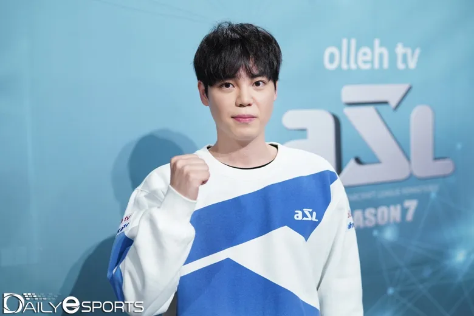

대한민국의 前 스타크래프트 프로게이머. 現 아프리카TV 인터넷 방송인. 현역 시절 브루드 워 양대 개인 리그 총합 1회 우승, 4강 3회 진출을 기록한 저그 플레이어였다. 또 뇌참매퀸으로 묶여 브루드 워 후반기 STX SouL 소속 저그 에이스로 활약하였으며, 드래프트 세대 저그 게이머 중에 이제동에 이은 2인자로 평가받았다.
아마추어 시절에 중국 베이징에서 열린 CKCG 아마추어 부문 경기에서 준우승을 차지한 것을 계기로 2005년 하반기 드래프트에서 SouL 팀에 2차 지명으로 입단하게 된다.
2006년 후기리그 때는 팀플레이 저그로 뛰면서 9승 1패를 기록하며 팀플전 다승왕을 차지했고, 2007년까지 주로 팀플 멤버로 활약하다가[9] 08-09 시즌부터 팀플레이가 폐지된 이후부터 개인전 및 개인리그에서도 본격적으로 두각을 보이기 시작해 MSL 우승에까지 이르렀다. 이는 여러 팀플 전담 선수들이 팀플 폐지 후 설 자리를 잃고 사라져간[10] 것과는 대조적인 행보로, 김윤환 본인이 개인전에의 희망을 잃지 않고 꾸준히 개인전 연습을 했던 것이 주효했던 듯. 어떤 의미에선 팀플 폐지의 최고 수혜자라고 할 수 있다. 자신도 팀플이 없어져서 좋다고 말했다.
